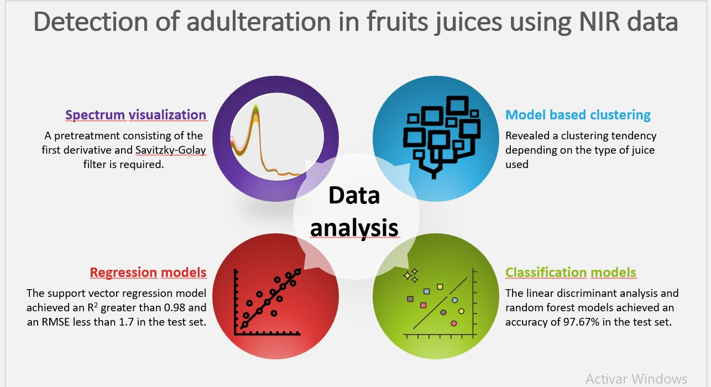

Introduction
Esta Tesis Doctoral se enmarca en el ámbito del análisis de datos aplicado al control de calidad de productos alimentarios y la detección de residuos de líquidos inflamables (ILRs) en escenarios post-incendio. Ambos campos, cruciales para la industria alimentaria y las ciencias forenses, enfrentan desafíos significativos en términos de autenticidad, seguridad del consumidor y eficiencia en las investigaciones forenses. En este trabajo, se proponen metodologías innovadoras que combinan técnicas espectroscópicas avanzadas (FTIR, Vis-NIR y nariz electrónica basada en HS-GC-IMS) con algoritmos de Machine Learning (ML) para optimizar la detección de adulteraciones en productos alimentarios, como zumos y miel, y la identificación de ILRs.
En el sector alimentario, la adulteración de productos de alto valor comercial ha crecido, a pesar de las estrictas regulaciones. Este fenómeno afecta tanto la calidad del producto como la salud de los consumidores. En el ámbito forense, la identificación de ILRs en escenarios post-incendio sigue siendo un desafío debido a las bajas concentraciones de los compuestos y la complejidad del análisis tras la extinción del fuego. A lo largo de esta investigación, se ha desarrollado un enfoque que combina técnicas espectroscópicas avanzadas y algoritmos ML, proporcionando una caracterización precisa y rápida de las muestras.
El objetivo principal de esta investigación es desarrollar modelos predictivos automatizados que mejoren tanto la seguridad alimentaria como la investigación forense. Para el análisis de adulteraciones, los modelos permiten detectar y cuantificar adulteraciones en zumos y miel. En el contexto forense, los modelos optimizan la detección de ILRs. Estos avances podrían sustituir o complementar los métodos actuales, haciéndolos más accesibles, económicos y eficientes.
Methodology
We used a variety of analytical techniques including FT-IR, NIRs, and HS-IMS...
Results and Discussion
La presente Tesis Doctoral se presenta bajo la modalidad de tesis de Compendio de Publicaciones, y cumple con todos los requisitos establecidos en el Artículo 23 de la regulación UCA/CG06/2012, fechada el 27 de junio de 2012, sobre la organización de estudios de doctorado en la Universidad de Cádiz.
Conforme a la normativa vigente, todos los documentos originales se adjuntan al final de esta memoria, en los Apéndices I-V. Los permisos editoriales para la reutilización de los trabajos completos en esta Tesis Doctoral, así como la declaración de conformidad de todos los coautores y su renuncia formal a reutilizarlos en otra Tesis, se incluyen en los apéndices correspondientes.
Las publicaciones científicas que conforman el compendio son las siguientes:
- Calle, J.L.P.; Barea-Sepúlveda, M.; Ruiz-Rodríguez, A.; Álvarez, J.Á.; Ferreiro-González, M.; Palma, M. Rapid Detection and Quantification of Adulterants in Fruit Juices Using Machine Learning Tools and Spectroscopy Data. Sensors 2022, 22, 3852, https://doi.org/10.3390/s22103852.
- Calle, J.L.P.; Falatová, B.; Aliaño-González, M.J.; Ferreiro-González, M.; Palma, M. Machine Learning Approaches over Ion Mobility Spectra for the Discrimination of Ignitable Liquids Residues from Interfering Substrates. Talanta Open 2022, 6, 100125, https://doi.org/10.1016/j.talo.2022.100125.
- Calle, J.L.P.; Ferreiro-González, M.; Ruiz-Rodríguez, A.; Fernández, D.; Palma, M. Detection of Adulterations in Fruit Juices Using Machine Learning Methods over FT-IR Spectroscopic Data. Agronomy 2022, 12, 683, https://doi.org/10.3390/agronomy12030683.
- Calle, J.L.P.; Punta-Sánchez, I.; González-de-Peredo, A.V.; Ruiz-Rodríguez, A.; Ferreiro-González, M.; Palma, M. Rapid and Automated Method for Detecting and Quantifying Adulterations in High-Quality Honey Using Vis-NIRs in Combination with Machine Learning. Foods 2023, 12, 2491, https://doi.org/10.3390/foods12132491.
- Calle, J.L.P.; Vázquez-Espinosa, M.; Barea-Sepúlveda, M.; Ruiz-Rodríguez, A.; Ferreiro-González, M.; Palma, M. Novel Method Based on Ion Mobility Spectrometry Combined with Machine Learning for the Discrimination of Fruit Juices. Foods 2023, 12, 2536, https://doi.org/10.3390/foods12132491.
- Calle, J.L.P.; Ferreiro-González, M.; Palma, M. Automated Adulteration Quantification in Juice: Methodology based on ion mobility spectrometry and machine learning. Microchemical Journal 2024.
Además, esta memoria se presenta también bajo la modalidad de Doctorado con Mención Internacional, por lo que, siguiendo los requisitos establecidos en el Artículo 34 del Reglamento UCA/CG06/2012 del 27 de junio de 2012 por el que se regula la ordenación de los estudios de doctorado en la Universidad de Cádiz.
Discussion of Results
In this section, a comparative analysis of the PCA results from both ion mobility spectrometry (IMS) and FTIR spectroscopic data will be discussed. The primary objective is to highlight the similarities and differences in the detection of adulterants in fruit juices using both methods. Each plot provides a visual representation of the clustering behavior of the samples, offering insights into the discrimination power of each technique.
PCA Analysis: Ion Mobility Spectrometry (IMS)
PCA Analysis: FTIR Spectroscopic Data
The above plots illustrate the principal component analysis (PCA) for both IMS and FTIR data. As can be observed, both methods allow for a clear distinction between the different groups of fruit juices, albeit with slight variations in the sample clustering. These differences can be attributed to the distinct sensing mechanisms of each technique, as IMS captures ion mobility while FTIR focuses on molecular vibrations.
FTIR Spectrum Analysis
Another Spectral Analysis
The spectral data provided by FTIR offers a detailed view of the molecular fingerprint of the samples. By comparing the spectra, it is possible to identify specific regions that are more sensitive to the presence of adulterants. This capability complements the PCA analysis, further strengthening the detection process.
Conclusions
Here we summarize the key findings of our research...
References
- Author, A. (Year). Title of the paper. Journal Name.
- Author, B. (Year). Title of another paper. Another Journal Name.
Applications
Explore our interactive Shiny applications below:
Application 1 Title
Description of Application 1. This application provides insights into...
Application 2 Title
Description of Application 2. This app helps with...
Application 3 Title
Description of Application 3. This tool is designed to...